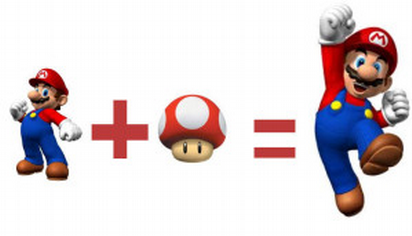
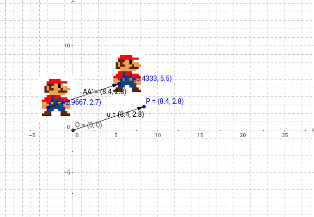
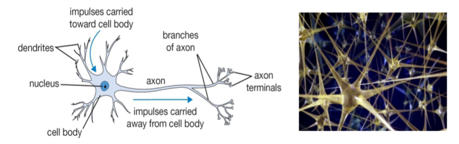
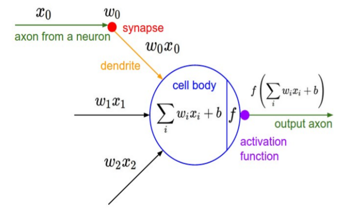
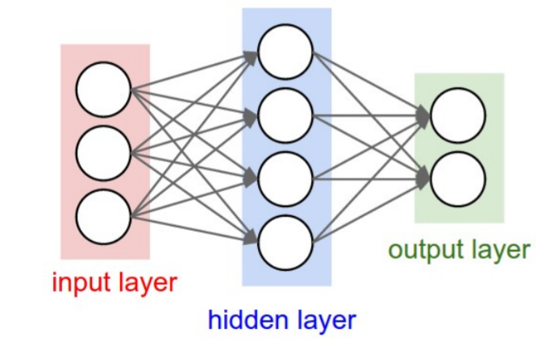

¡Aprende matemáticas por el bien de todos!
Presentación
INSERTE AQUÍ PRESENTACION RAPIDA DE LOS ADSCRIPTOS
- Mauricio Agosta
- Iván Mindlin
- M. Victoria Talerico
- Ulises J. Cornejo Fandos
El objetivo de ésta charla es responder la siguiente pregunta:
¿Cual el es rol que cumple la matemática en la Computación?
Ejemplos comunes de aplicación
Las carreras de la facultad están orientadas a la producción de Software, Investigación, etc., por lo que la siguiente lista refleja los ejes fundamenteles respecto de éste ámbito.
- Sistemas Web
- Desarrollo de Videojuegos
- Mineria de Datos
-
Inteligencia Artificial
- Machine Learning
- Deep Learning
- Software de Dominio Específico
- etc
Sistemas Web
Éste es uno de los ejes más populares hoy en día dentro de lo que es la producción de software.
En éste ámbito se ven reflejados algunos de los aspectos más básicos de la programación como lo son la lógica y persistencia de datos.
Particularmente, el manejo de base de datos se basa fundamentalmente en la Teoría de Conjuntos.
Las Relaciones y Conjuntos son una forma de entender la información.
EJERCICIO
Autenticación de usuario
PROGRAM example;
BEGIN
END.
Matrices en la Programación
¿Qué es una matriz?
Una matriz es un conjunto de elementos que se encuentran ordenados en filas y columnas.
\[ A = \begin{pmatrix} a_{11} & a_{12} & a_{13} & \dots & a_{1n} \\ a_{21} & a_{22} & a_{23} & \dots & a_{2n} \\ a_{31} & a_{32} & a_{33} & \dots & a_{3n} \\ \vdots & \vdots & \vdots & \ddots & \vdots \\ a_{m1} & a_{m2} & a_{m3} & \dots & a_{mn} \\ \end{pmatrix} \]Operaciones sobre matrices
- Suma de matrices
- Multiplicación entre matrices
- Multiplicación de una matriz por un escalar
- Con sus respectivas propiedades
- Asociativa de la suma, elemento neutro, elemento opuesto, etc...
Aplicaciones de la matrices en la informática
Las matrices nos permiten almacenar y organizar datos
- Gráfica computacional
- Video juegos
- Resolución de grandes operaciones y ecuaciones complejas en tiempo relativamente cortos
- Transformaciones espaciales, vectoriales y de las matrices
- Sistemas de detección de rostros
- ...
Gráfica computacional con matrices
Tarjetas de video: componente que se encarga de regular y mostrar las imágenes y texto.
Muy utilizadas en el ámbito gráfico debido a que las tarjetas de video realizan todos los procedimientos y dispocisión de la información en forma matricial.
Diversos tipos de matrices
- Matrices de traslación
- Matrices de rotación
- Matrices de escalamiento
Ejemplo de utilización en el ambito gráfico
Para representar un punto gráficamente se representa mediante un vector de tres dimensiones (representación 3d).
\[ vector(x, y, z) \rightarrow \begin{pmatrix} x \\ y \\ z \end{pmatrix} \]
Diferentes transformaciones → Diferentes efectos
Ejemplo: en un videojuego
Transformaciones
Escalado
Cambia el tamaño y proporción de lo que se está representando. Si queremos escalar uniformemente los tres ejes,
\[ P = \begin{pmatrix} x \\ y \\ z \end{pmatrix} \] \[ P' = \begin{pmatrix} a & 0 & 0 \\ 0 & a & 0 \\ 0 & 0 & a \\ \end{pmatrix} \begin{pmatrix} x \\ y \\ z \end{pmatrix} \]Matriz resultante: coordenadas del punto escalado
Ejemplo
Super Mario Bros
Cuando mario se come el honguito el personaje aumenta su tamaño!

Traslación
Desplazar un punto, o más, una cierta cantidad de veces en un sentido y dirección definida.
\[ P = \begin{pmatrix} x \\ y \\ z \end{pmatrix} \] \[ P' = \begin{pmatrix} x \\ y \\ z \end{pmatrix} + \begin{pmatrix} a \\ b \\ c \end{pmatrix} \]Transformación de Traslación
Ejemplo
Conclusión
Los arreglos y matrices son muy utilizados en el ámbito informático, ya que nos permiten almacenar y manipular conjuntos de datos agrupados de manera eficiente.
Games Development
En el desarrollo de videojuegos, las matemáticas se utilizan para la física de los mismos.
¡No programamos física como tal!
Las matemáticas permiten formalizar la física necesaria para la programación de videojuegos.
Ejemplo
Supongamos que queremos modelar una bola que se encuentra a 5m de altura. Se la deja caer en alguna dirección e impacta con el suelo, revotando hasta quedar en reposo.
Ver ejemplo
Existen diversas formas de plantear el desarrollo de éste problema. A continuación se dispone una de ellas:
Se plantea el movimiento de la bola en 2D, quedando la posición de la misma de la siguiente forma:
Para esto se busca conocer un vector posición:
\[ \vec{\mathbf{r}} = (x, y) \]el cual esté definido en un tiempo \(t\).
Siguiendo esto, nos quedaría algo así.
Ver ejemploAhora, podemos aplicar el caso anterior a \(n\) bolas...
Ver ejemploAlgunas cosas a tener en cuenta al momento de desarrollar un juego...
Movimiento de partículas en 3D
Ver ejemplo
Cinemática de un Objeto
Ver ejemplo
Interacción entre objetos
Ver ejemplo
Colisiones
Ver ejemplo
Mini demostración de juego
Ver ejemplo
Resumen
IVAN - Criptografia
Contenido
Inteligencia Artificial
Respecto de este campo de la ciencia de la Computación podemos hablar de una de sus ramas...
Machine Learning
Es una rama de la inteligencia artificial cuyo objetivo es desarrollar técnicas que permitan a las computadoras aprender. De forma más concreta, se trata de crear programas capaces de generalizar comportamientos a partir de una información suministrada en forma de ejemplos.
Entre las aplicaciones más comunes está el Analisis de Datos y mayormente el estudio de la Complejidad Computacional.
Las matemáticas permiten el desarrollo de algoritmos los cuales le permitan a una máquina discriminar datos.
Entran en juego muchos campos de estudio, como la Probabilidad y la Estadística, entre otros.
El aprendizaje automático tiene una amplia gama de aplicaciones, incluyendo motores de búsqueda, diagnósticos médicos, detección de fraude en el uso de tarjetas de crédito, análisis del mercado de valores, clasificación de secuencias de ADN, reconocimiento del habla y del lenguaje escrito, juegos y robótica.
Realmente muchas aplicaciones
Y así como el machine learning tiene muchas aplicaciones, require el uso de mucha matemática
¿Cómo funciona el cerebro?
¿Cómo funciona el cerebro?
-
Neurona: Unidad computacional básica a nivel cerebral
- 86.000 millones de neuronas
- Conectadas a través de sinapsis: \[ 10^{14} – 10^{15} \]
- Reciben señales de entrada desde las dendritas
- Producen señales de salida a través del axón
- Interactúa con dendritas de otras neuronas a través de pesos sinápticos
- Aprendizaje: Adaptación de pesos
Redes Neuronales Artificiales
Conjuntos de sumas con pesos
Partiendo de este concepto básico aparecen distintos tipos de NN.
- Redes Neuronales Profundas - DNN
- Redes Neuronales de Convolución - CNN
- etc
Otros Ejemplos
¿Cuántas cámaras hay que colocar para vigilar completamente una casa?
Éste es un problema matemático que se conoce como:
"El problema de la galería de arte".
Es un problema que pertenece a una rama de las matemáticas denominada Geometría Computacional
Puedes ver una explicación del problema a continuación
¿Cuántas cámaras hacen falta para vigilar una casa?En resumen, hay una forma de encontrar una solución con Triangulaciones y Teoría de Grafos.
Se triangula un polígono de \(n\) lados obteniendo \(n-2\) triángulos.
Se construye un grafo dual con el centro de cada uno de ellos, siendo éste siempre de un tipo específico...
Arboles
Es demostrable que, siendo \(n\) la cantidad de lados del polígono, la cantidad máxima de cámaras \(c\) será:
\[ \mathbf{c} = \frac{\mathbf{n}}{3} \]Cátedras de la Facultad
A continuación se muestra como las distintas cátedras de la facultad introducen estos temas. (CAMBIAR)
Primer Año
- Conceptos de Algoritmos, Datos y Programas
- Lógica
- Recurrencia
- Estructuras Algebráicas
- Organización de Computadoras
- Lógica
- Teoría de Números
- Congruencias
- Taller de Programación
- Estructuras Algebráicas
- Teoría de Conjuntos
- Clases
- Objetos
Segundo Año
Primer Semestre
- Fundamentos de Organización de Datos
- Persistencia de Datos
- Estucturas Algebráicas
- Funciones
- Algoritmos y Estructuras de Datos
- Estructuras Algebráicas
- Teoría de Conjuntos
- Teoría de Grafos
- Optimización
Segundo Semestre
- Diseño de Bases de Datos
- Persistencia de Datos
- Teoría de Conjuntos
- Álgebra Relacional
- Orientación a Objetos I
- Teoría de Conjuntos
- Clases
- Objetos
- Teoría de Conjuntos
Tercer Año
Segundo Semestre
- Computabilidad y Complejidad
- Lógica
- Álgebra Relacional
- Bases de Datos
- Persistencia de Datos
- Teoría de Conjuntos
- Álgebra Relacional
- Optimización
Cuarto Año
- Teoría de la Computación y Verificación de Programas
- Computabilidad y Complijidad
- Optimización
- Lógica e Inteligencia Artificial
- Probabilidades y Estadísticas
- Sistemas Paralelos
Resumen
Preguntas
Contactos (completar con los mails de c/u)
ucornejofandos@lifia.info.unlp.edu.ar